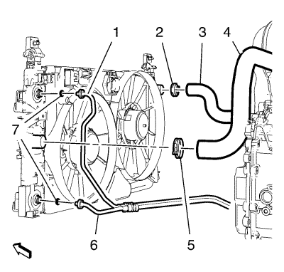
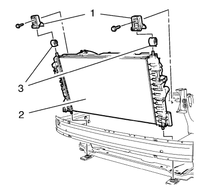

Suelte el clip para mazo de cables (8) de la cubierta del ventilador de refrigeración del motor.
Suelte el mazo de cables de las sujeciones de la cubierta del ventilador de refrigeración del motor (9). Cuelgue el mazo de cables a un lado.
Bajar el vehículo.
Desemborne los 2 enchufes del mazo de cables del motor del ventilador de refrigeración del motor (3, 5).
Suelte el clip para mazo de cables (4, 7) de la cubierta del ventilador de refrigeración del motor.
Suelte el mazo de cables de las sujeciones de la cubierta del ventilador de refrigeración del motor (6).
Cuelgue el mazo de cables de la cubierta del ventilador de refrigeración del motor a un lado.

Retire la abrazadera del tubo flexible de entrada del radiador (5) y el tubo flexible de entrada del radiador (4) del radiador.
Retire los anillos de seguridad y las boquillas de aceite superiores e inferiores (1, 6) con los anillos de junta de boquilla de aceite (7) del radiador.
Retire la abrazadera del tubo flexible de salida del radiador (2) y el tubo flexible de salida del radiador (3) del radiador.

Retire los 2 tornillos del soporte superior del radiador y los 2 soportes superiores del radiador (1) del radiador.
Retire los 2 aislantes superiores del radiador (3) del radiador.
Retire el radiador (2) y la cubierta del ventilador de refrigeración del motor del vehículo tirando de ellos hacia arriba.
Monte los 2 soportes superiores del radiador (1) con los 2 tornillos del soporte superior del radiador en el radiador y apriételos a 22 N·m (16 lib. pie).
Monte la abrazadera del tubo flexible de salida del radiador (2) con el tubo flexible de salida del radiador (3) en el radiador.
Monte 2 anillos de junta de boquilla de aceite NUEVOS (7) y fije con clips las boquillas de aceite superiores e inferiores (1, 6) a los anillos de junta en el radiador.
Monte la abrazadera del tubo flexible de entrada del radiador (5) con el tubo flexible de entrada del radiador (4) en el radiador.
Monte y coloque en la posición correcta el mazo de cables de la cubierta del ventilador de refrigeración del motor.
Fije con clips el mazo de cables a las sujeciones de la cubierta del ventilador de refrigeración del motor (6).
Fije el clip para mazo de cables (4, 7) a la cubierta del ventilador de refrigeración del motor.
Emborne los 2 enchufes del mazo de cables del motor del ventilador de refrigeración del motor (3, 5).
Elevar el vehículo
Fije el mazo de cables a las sujeciones de la cubierta del ventilador de refrigeración del motor (9).
Fije el clip para mazo de cables (8) a la cubierta del ventilador de refrigeración del motor.